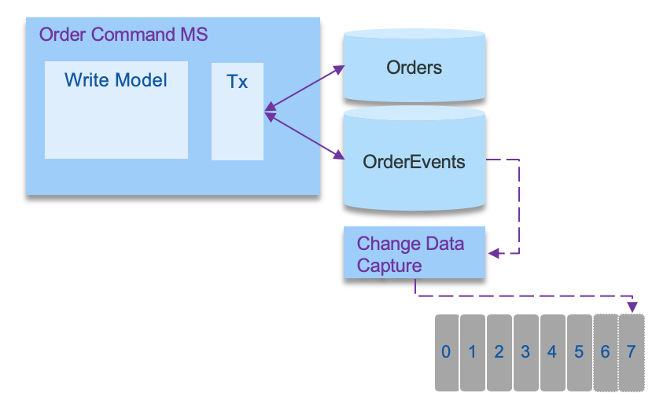

Transactional outbox pattern
When distributed transaction is not supported by the messaging middleware (like current Kafka version), it is important to ensure consistency between the records in the database and the events published. In the reference implementation we used the approach to publish to the topic as soon as an order is received via the API and then the same code, is consuming this events to persist to the database. With this approach if write to the topic operation fails, the application can return an error to the user, if the write operation to the database fails, the code can reload from the non-committed record.
But there is another solution presented by the transactional outbox. For detailed information about this pattern see the documentation of the pattern in Chris Richardson's site: Transactional outbox.
To summarize this pattern, the approach is to use an outbox table to keep the messages to sent and a message relay process to publish events inserted into database to the event backbone. In modern solution this relay is a change data capture agent. The following schema illustrates the approach:

To get a concrete example of this pattern we have developed a deep dive lab using Quarkus Debezium outbox pattern and a DB2 database, or see our outbox on quarkus with Debezium and Postgresql implementation